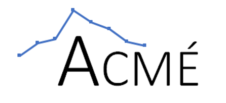
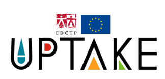

| Composition of the PhD committee | ||
| Name | Role | Affiliation |
|---|---|---|
| Olivier Chanel | Chair | DR CNRS, AMSE, Aix-Marseille Université |
| Giulia Greco | Examiner | Associate Professor, London School of Hygiene and Tropical Medicine |
| Nora Moumjid | Reviewer | Professor, Université Claude Bernard Lyon 1 |
| Clémence Thébaut | Reviewer | Associate Professor HDR, Université de Bordeaux |
| Paola Villar | Examiner | Associate Professor, Université Paris 1 Panthéon-Sorbonne |
| Jérôme Wittwer | Examiner | Professor, Université de Bordeaux |
| Sylvie Boyer | PhD co-supervisor | Associate Professor, Aix-Marseille Université |
| Bruno Ventelou | PhD supervisor | DR CNRS, AMSE, Aix-Marseille Université |
Published articles

Compensate at your own risk: Heterogeneity in compliance with preventive behaviors through the lens of economic and social preferences
A. Lacombe and M. Guillon · 2026 · International Journal of Health Economics and Management
Preventive behaviors COVID-19 Latent class analysis Economic preferences
NoteAbstract & link
Protective behaviors are crucial for controlling the spread of infectious diseases. Until now, most of the literature on the understanding of the willingness to comply with protective behaviors at the individual level focused on either one of those behaviors or studied several behaviors but independently. However, protective behaviors might not be independent of each other’s and the question of the relationship between these various behaviors deserves to be further investigated. The COVID-19 pandemic represents an interesting setting to study compliance with preventive behaviors when several prophylactic measures aiming to reduce the same infection risk are available. The aim of this study is to investigate how economic and social preferences may shape the relationship between three types of COVID-19 protective behaviors among a representative sample of the French population: 1) respect of restrictions on movement, 2) compliance with barrier gestures and 3) COVID-19 testing. Using a Latent Class Analysis, we identify four groups of individuals with diverging patterns of compliance with protective behaviors, differing both in terms of intensity and types of prophylactic measures followed. Our results support the existence of a risk compensation process leading some individuals to tailor their menu of prophylactic measures until they reach the risk threshold they are willing to handle. Exploring heterogeneity in preventive behaviors may motivate authorities to design targeted prevention and communication campaigns that are better tailored to achieve public health goals.

Does improving diagnostic accuracy increase artificial intelligence adoption? A public acceptance survey using randomized scenarios of diagnostic methods
Y. Hswen, I. Rafaï, A. Lacombe, B. Davin-Casalena, D. Dubois, T. Blayac and B. Ventelou · 2024 · Artificial Intelligence in Health
Artificial intelligence Diagnostic testing Public acceptance Randomized scenarios
NoteAbstract & Link
This study examines the acceptance of artificial intelligence-based diagnostic alternatives compared to traditional biological testing through a randomized scenario experiment in the domain of neurodegenerative diseases. A total of 3225 pairwise choices of neurodegenerative disease risk-prediction tools were offered to participants, with 1482 choices comparing AI with the biological saliva test and 1743 comparing AI+ with the saliva test. Overall, only 36.68% of responses showed preferences for AI/AI+ alternatives. Acceptance increased markedly when sensitivity and specificity reached 95%. Notably, AI consistently garnered higher acceptance rates than AI+ at comparable sensitivity and specificity levels. These results highlight nuanced preferences for AI diagnostics, with higher sensitivity and specificity significantly driving acceptance of AI diagnostics.
Working papers
Diagnostic Test Value: How Treatability and Transmissibility interact with individual traits
A. Lacombe · Working paper
Diagnostic testing Treatability Transmissibility Health behaviour
NoteAbstract
Diagnostic tests have become a cornerstone of early disease detection, playing a crucial role in curbing the spread of infectious diseases and enhancing the management of non-infectious conditions. Nonetheless, testing rates remain below public health objectives. This paper focuses on individuals’ decisions to undergo testing. Using a representative sample of the French population, we examine how two disease features; treatability and transmissibility, and personal characteristics shape people’s willingness to get tested and the hedonic value they assign to diagnostic information for a hypothetical disease. Repeated elicitation of willingness to pay while varying disease characteristics enables the estimation of within-individual variation in diagnostic valuation. We employ an interval-censored regression model with endogenous selection correction and correlated individual-specific random intercepts to capture both individuals’ choices to undergo testing and their monetary assessment of its worth. We find that both transmissibility and treatability shape test-seeking behaviour, with substantial heterogeneity across individuals. In particular, risk, time and social preferences, together with trust in science, play an important role in the decision-making process.
Preferences for comprehensive HIV prevention services among women and girls in Nairobi and Kampala: a discrete choice experiment
UPTAKE research team · Working paper
HIV prevention Discrete choice experiment Women and girls East Africa
Climate-Informed Resource Allocation for Infectious Disease Prevention: A Spatial Economic Evaluation
A. Lacombe · Working paper
Climate Resource allocation Infectious diseases Spatial economic evaluation
Ongoing projects

ACME
Improving the acceptability and accessibility of preventive countermeasures, including vaccines, in emerging epidemics
Emerging epidemics Vaccines Countermeasures Acceptability

UPTAKE
Universally Accessible HIV Prevention Technologies for African Girls and Young Women through Knowledge Applied from Behavioural Economics
HIV prevention Behavioural economics Women and girls Preferences
Other publications
Individual Trade-offs in Diagnostic Testing: An Economic Analysis of Preventive and Diagnostic Decisions in Infectious Diseases
A. Lacombe · PhD thesis · Publicly defended on April 21, 2026
PhD thesis Diagnostic testing Preventive behaviours Stated preferences
NoteAbstract, jury composition and links
Diagnostic tests are central tools for infectious disease prevention and control, but their impact depends directly on individuals’ decisions to adopt preventive behaviors and undergo testing. This thesis presents four empirical studies investigating individual decisions to adopt preventive behaviors and the preferences that shape the acceptability of preventive actions in infectious diseases.
This work combines tools from behavioral economics and stated-preference methods to examine how individuals’ preferences shape the trade-offs between the perceived costs and benefits of preventive behaviors and diagnostic testing, and how these preferences can be used to inform public health policies.
The first chapter studies individuals’ perceived value of diagnostic information with respect to disease characteristics, namely treatability and transmissibility, and individual traits. The second chapter examines compliance with preventive behaviors during the COVID-19 pandemic in France for a set of preventive measures, including diagnostic testing. The third chapter studies mothers’ and healthcare workers’ preferences for the diagnosis and management of the risk of vertical transmission of HIV, HBV and syphilis in The Gambia. The fourth chapter explores the preferences of women engaged in sex work and adolescent girls and young women in Kampala, Uganda, and Nairobi, Kenya, regarding the provision of HIV pre-exposure prophylaxis within sexual and reproductive health services.
Peer review
✓
Peer-review activity
Reviewer for academic journals
PLOS ONE (2023, 2026)
“There’s no such thing as the unknown, only things temporarily hidden, temporarily not understood.” Cpt James T. Kirk